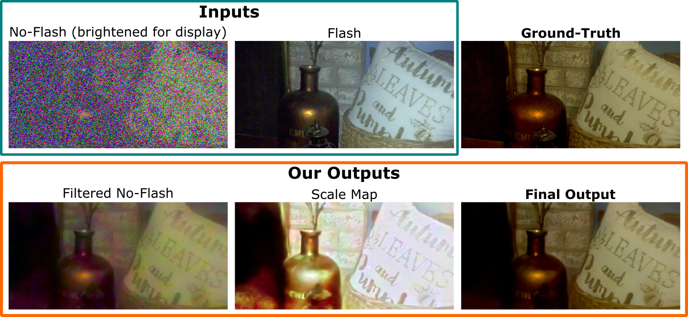

Deep Denoising of Flash and No-Flash Pairs for Photography in Low-Light Environments CVPR 2021
- Zhihao Xia WUSTL
- Michaël Gharbi Adobe Research
- Federico Perazzi Facebook
- Kalyan Sunkavalli Adobe Research
- Ayan Chakrabarti WUSTL
Example Results
Overview
We introduce a neural network-based method to denoise pairs of images taken in quick succession in low-light environments, with and without a flash. Our goal is to produce a high-quality rendering of the scene that preserves the color and mood from the ambient illumination of the noisy no-flash image, while recovering surface texture and detail revealed by the flash. Our network outputs a gain map and a field of kernels, the latter obtained by linearly mixing elements of a per-image low-rank kernel basis. We first apply the kernel field to the no-flash image, and then multiply the result with the gain map to create the final output. We show our network effectively learns to produce high-quality images by combining a smoothed out estimate of the scene's ambient appearance from the no-flash image, with high-frequency albedo details extracted from the flash input. Our experiments show significant improvements over alternative captures without a flash, and baseline denoisers that use flash no-flash pairs. In particular, our method produces images that are both noise-free and contain accurate ambient colors without the sharp shadows or strong specular highlights visible in the flash image.